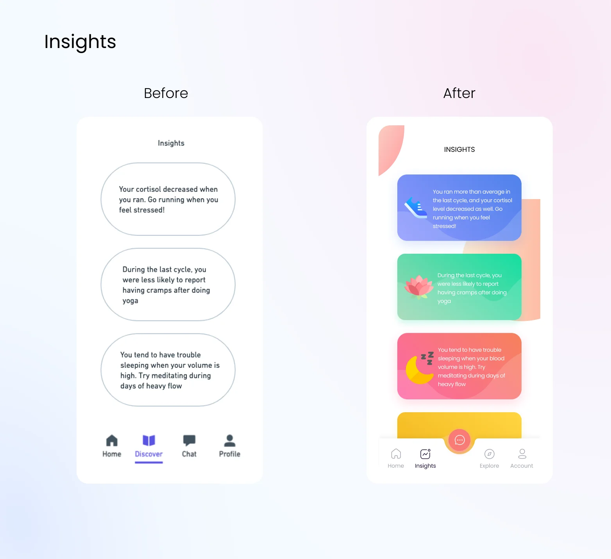
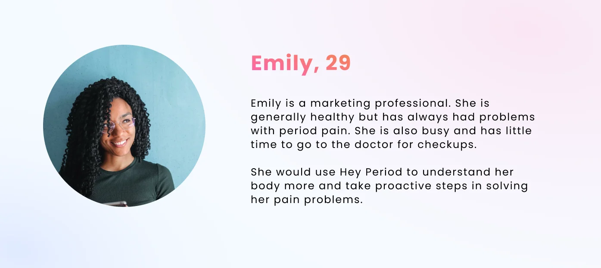
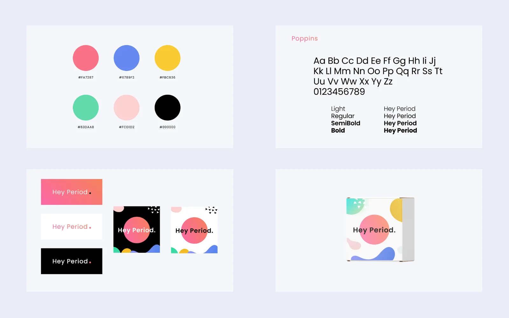
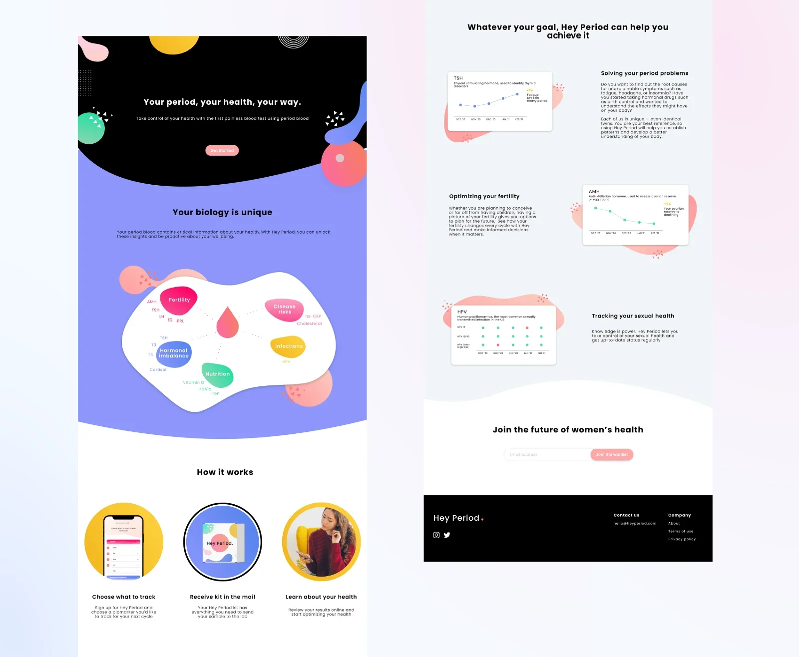

Hey Period — making a new kind of blood test feel credible
Hey Period was developing a blood test that uses menstrual blood. Before launch, the team needed a brand, a waitlist site, and a visual system for the app. I designed all three in two months.
CLIENTHey Period · femtech startup
ROLEProduct designer · only designer
TIMELINE2 months · 2021
TOOLSFigma
Mine from the startBrand identity, marketing site, assets, and marketing copy.
Built on team workThe app began with team-supplied low-fidelity flows. My scope was the visual system and the navigation and interaction changes shown below.
StatusPre-launch handoff
Project status: the work was handed off during R&D. I did not have direct access to users. Launch outcomes are unconfirmed.
A NEW SAMPLE, AN OLD TRUST PROBLEM
The product asked people to trust an unfamiliar sample type with personal health data. It needed to look medically credible without turning menstruation into something cold or clinical.
THE HI-FI PASS CHANGED THE UX
I developed the supplied wireframes into a consistent app interface. The examples below distinguish the starting material from my changes:
Home · inherited flow to final UIThe wireframe list becomes tappable biomarker chips and recommendation cards. Scores and clinical content are illustrative mockup data, not evidence of diagnostic capability.

InsightsOutlined bubbles became color-coded cards with icons, one insight each, readable on a lock-screen-length visit.AssistantThe wireframe's human coach "Megan" became an explicitly branded bot; a health product shouldn't pretend a person reads your results. Biomarker cards render inline, and quick-reply chips replace free typing.
I restructured the bottom navigation: Home / Discover / Chat / Profile became Home / Insights / Explore / Account. "Insights" is the core promise, so it earned a tab; the assistant is a helper, so "Chat" became a floating entry point.
I DID NOT HAVE DIRECT USER ACCESS
This retrospective uses the project boards and a comparison of period-tracking conventions to explain the design. I did not run direct user interviews, and the personas below are assumptions rather than participant findings.
These project-era reference categories suggest three design questions; they are not a current competitive analysis:
Competitor
What it owns
Trust signal
Implication for Hey Period
Flo
Period-tracking visual conventions
Familiar category cues
Could a familiar palette help explain the proposed service?
Clue
Science-forward tracking
Clinical tone, citations
How could the design balance precise explanations with an approachable tone?
Mail-in test kits (Everlywell-type)
The mail-a-sample behavior
Medical packaging, results dashboards
How clearly would the kit explain the unfamiliar sample process and service limits?
The two personas below were planning tools, not research findings. They gave the team two different trust thresholds to design for: someone already comfortable with health tracking, and someone using the product for a specific medical need.
Persona ABrandy, 21, tracks everything already; Hey Period has to earn a slot next to her Apple Watch.

Assumption persona BA time-constrained person with health questions needs a clear explanation of the proposed service and its limits. The concept is not evidence that a test can replace medical care.
HOW PLAYFUL COULD A BLOOD TEST FEEL?
The main brand decision was how much playfulness the product could carry before the test stopped feeling serious.
The pink deliberately echoes Flo.
The project uses pink as a recognizable period-care cue, with a broader supporting palette. Whether that cue helps people understand this service remains untested.
Supporting colors are whimsical on purpose.
Periwinkle, marigold, mint, and blush do the warmth job. You mail this product your period blood; the packaging has to feel more like a skincare subscription than a lab requisition.
Poppins, for both jobs.
Geometric enough for UI sizes, round enough for display sizes. One family across brand, web, and app kept a two-month timeline realistic.
This retrospective reconstruction compares three possible directions; it is not a record of options documented during the project:
Direction
What it buys
Why it lost / won
Clinical teal (the diagnostics look)
A clinical visual tone
Lost: indistinguishable from telehealth brands; kills the community half of the brief
Millennial beige (the DTC wellness look)
Shelf-pretty, safe
Risk: reads as skincare and obscures the prelaunch health concept
Familiar pink + whimsy (chosen)
Category recognition via the Flo echo, warmth via the supporting palette
Chosen: combines familiar category cues with the intended warmth

Brand systemPalette, type, lockups, and the kit box, which arrives first and had to sell the brand alone.
ONE JOB: EXPLAIN IT AND GET A SIGNUP
The waitlist page had to explain the test before asking for an email. I designed every asset and refined the copy with the Head of Product.
The biomarker map is the credibility centerpiece.
The mockup groups biomarker labels by topic so the content is easier to scan. A launched service would need clinical review of every test claim and explanation; visual credibility cannot establish medical validity.
Goal-based sections instead of feature lists.
"Solving your period problems / Optimizing your fertility / Tracking your sexual health", each with a chart card previewing the data. This organizes the intended information around a person's question; the health outcomes shown are not established by this design work.
How-it-works in exactly three steps.
Choose what to track, receive the kit, learn about your health. The design makes the mail-in step explicit. Whether that explanation earns trust remains a research question.

Full siteThe waitlist page in full: explanation first, goal-based sections, then the signup.
WHAT CARRIED TRUST AND WHAT ADDED WARMTH
I used different parts of the system for different jobs:
Clarity: readable information hierarchy, a clear explanation of the sample process, and an assistant identified as a bot.
% describing the brand as "trustworthy/medical" in a 5-second test
5-sec exposure, n≈20, open response
≥60% mention trust or health before "cute"
Perception, not behavior
Waitlist conversion
Visits → signups on the marketing site
Site analytics + form events
Baseline first; direction over absolute
Traffic source dominates early numbers
Kit-return intent
% of signups saying they'd mail a sample this cycle
One-question follow-up email
Establish baseline
Stated intent overstates behavior
CONSTRAINTS & SELF-CRITIQUE
A retrospective quality review highlights two design risks in the delivered mockups. These examples are later analysis, not changes established as part of the original handoff:
Contrast. The light chip backgrounds need dark labels. The proposed correction below uses the listed color pairs; the original exported screens remain historical artifacts.
E2SleepActivitiesBlood
2026 presentation reviewIllustrative correction: dark labels on light category chips. This is a later color treatment, separate from the historical client screens.
Calculated contrast for the four listed background colors, comparing white with dark text. This checks these color pairs, not the full app:
Chip (sampled color)
White text
Dark text (#1A1A1A)
Fix
Sleep marigold rgb(247,204,78)
1.53 — fail
11.36 — pass
flip to dark text
Activities mint rgb(105,226,183)
1.60 — fail
10.91 — pass
flip to dark text
Blood coral rgb(253,138,147)
2.27 — fail
7.65 — pass
flip to dark text
E2 periwinkle rgb(140,166,255)
2.33 — fail
7.47 — pass
flip to dark text
Mock data as real content. The screens measure blood volume in mg in one place and ml in another; mock health data deserves the same QA as shipping copy.
WHAT I WOULD DO NEXT
I would test the brand first with people who are skeptical of the sample type. They set the harder trust bar.
Brand & sitemine, end to end
App UIvisual system + nav restructure over the team's lo-fi